Phase 3 — The GUI in depth
This phase describes the window completely: every pane, every menu item, every setting. Phase 1 showed the basics; come here when you want to know exactly what something does.
- 3.1 The window
- 3.2 The editor
- 3.3 Running a program
- 3.4 The Datapath
- 3.5 The Pipeline chart
- 3.6 Disassembly and Instruction
- 3.7 Registers
- 3.8 Memory
- 3.9 Console and Messages
- 3.10 Tools
- 3.11 Settings
- 3.12 Theme and language
- 3.13 The menus, item by item
3.1 The window
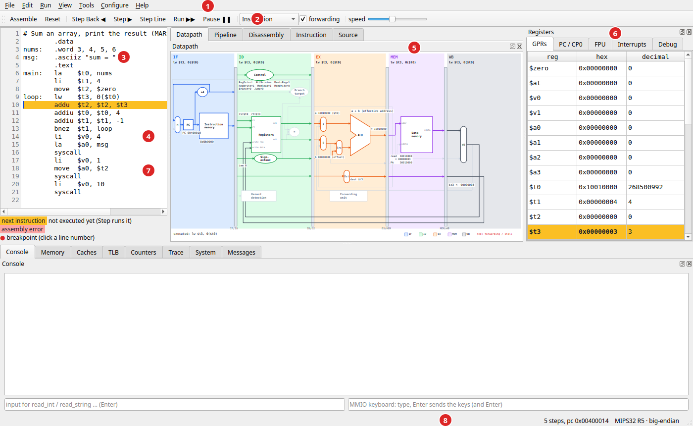
| Part | What it is | |
|---|---|---|
| 1 | Menu bar | File, Edit, Run, View, Tools, Configure, Help (3.13) |
| 2 | Toolbar | Assemble, Reset, Step Back, Step, Run, Pause; the mode; forwarding; the core (with more than one); the run speed |
| 3 | Editor | your program (3.2) |
| 4 | Legend | what the editor's colours mean |
| 5 | Views | Datapath, Pipeline, Disassembly, Instruction — tabs of one area |
| 6 | Registers | GPRs, PC / CP0, FPU (3.7) |
| 7 | Console, Memory, Caches, TLB, Counters, Trace, System, Messages | tabs of the bottom area |
| 8 | Status bar | steps or cycles (and CPI), the PC, the release and byte order |
Moving the panes
Everything except the editor is a pane with a title bar:
- drag its title bar to another edge of the window, or onto another pane to make them tabs of one area;
- double-click its title bar (or press the small button at its right) to detach it into a window of its own — useful on a second screen. A detached pane is a normal window: title bar with minimize, maximize and close, a frame to resize it, and a Dock button (or double-click the bar under the title) that puts it back where it was;
- close it with ✕, and bring it back from the View menu;
- View → Reset Layout restores the arrangement shown above.
The window remembers its size and layout, and all your options, between
sessions (in ~/.config/eMIPS/eMIPS.ini on Linux).
3.2 The editor
The editor holds your assembly source. Line numbers are on the left.
Line colours (explained by the legend under the editor):
| Colour | Meaning |
|---|---|
| amber | instruction mode: the next instruction to execute (not executed yet) |
| blue / green / orange / purple / grey | pipeline mode: the instruction in IF / ID / EX / MEM / WB in the last cycle |
| red | the line of an assembly error |
| red dot in the margin | a breakpoint |
Breakpoints: click a line number, or press F9 on the line the cursor is on. Edit → Clear All Breakpoints removes them all.
Editing helpers (Edit menu):
| Key | |
|---|---|
| Find, Replace (a bar opens under the editor; Enter = next, Esc closes) | Ctrl+F, Ctrl+H |
| Find next / previous | F3, Shift+F3 |
| Go to line | Ctrl+G |
Comment / uncomment the selected lines (#) |
Ctrl+/ |
| Indent / unindent the selected lines | Ctrl+], Ctrl+[ |
| Larger / smaller / normal text | Ctrl++, Ctrl+−, Ctrl+0 |
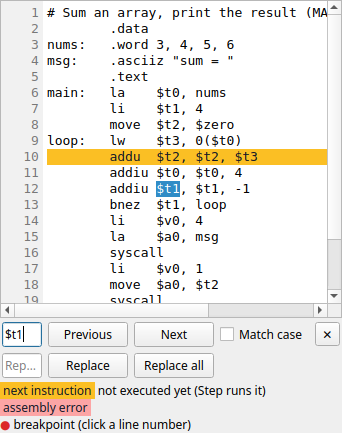
The window title shows the file name, with * when there are unsaved
changes; New, Open, Examples and Quit ask whether to save them.
Intel HEX files open as a read-only listing (address, word, instruction, then the data) — see Phase 2, 2.16. You can set breakpoints and run to the cursor on its lines like on source. Changing the release or byte order re-decodes it.
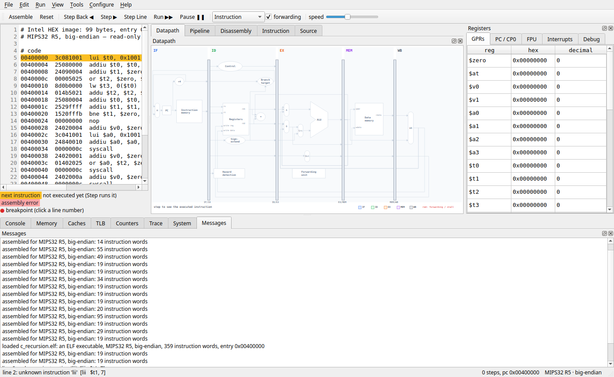
3.3 Running a program
| Button | Key | What it does |
|---|---|---|
| Assemble | Ctrl+B | assemble the editor text (or reload the HEX image) and restart |
| Reset | Ctrl+R | restart the program from the beginning (breakpoints and given input are kept) |
| Step Back ◀ | Shift+F10 | undo the last step |
| Step ▶ | F10 | one instruction — or one clock cycle in pipeline mode |
| Run ▶▶ | F5 | run until a breakpoint, the end, an error or an input request |
| Pause ❚❚ | F6 | stop running |
| Run → Run to Cursor | Ctrl+F10 | run until the line the cursor is on |
Mode (toolbar list, or Run → Mode):
- Instruction — each step executes one whole instruction; the views show that instruction.
- 5-stage pipeline — each step is one clock cycle; five instructions are in flight, one per stage. Changing the mode restarts the program.
Forwarding (toolbar check box, or Run → Forwarding): with it off, the pipeline has no bypass paths and every dependent instruction waits until its operand has been written back.
Speed (the slider), from slow to fast:
| Position | Runs |
|---|---|
| 1 | one step every 0.6 s |
| 2 | one step every 0.25 s |
| 3 | one step every 0.08 s (the default) |
| 4 | about 330 steps per second |
| 5 | about 20 000 steps per second (views updated when it stops) |
| 6 | as fast as possible (views updated when it stops) |
Step back works by running the program again from the start up to the previous step — exactly, because the simulation is deterministic and the console input you gave is fed again in the same order. In a long program this takes a moment.
Assembling automatically: if you edit the source and press Step or Run, the program is assembled again first (and therefore restarts); the status bar says so. Settings → Assembler can turn this off.
Input: when the program reads (read_int ...), running stops and the
Console's input line turns amber: type the value and press Enter, then
Step or Run again (3.9).
When it stops, the status bar says why: breakpoint, reached the cursor line, the program has ended, step limit reached or an error, which also goes to the Messages pane — for example an exception with no handler is explained there (Phase 2, 2.11).
3.4 The Datapath
The Datapath draws the classic 5-stage MIPS pipeline (Patterson & Hennessy). The stages are the coloured columns, separated by the grey pipeline registers (IF/ID, ID/EX, EX/MEM, MEM/WB) that hold everything the next stage needs. Above each column: the stage name and the instruction in it.
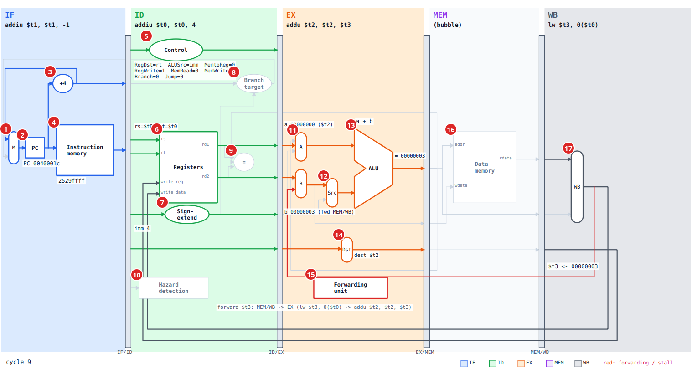
| Part | Stage | What it does | |
|---|---|---|---|
| 1 | PC mux (M) | IF | chooses the next PC: PC + 4, or the branch / jump target decided in ID |
| 2 | PC | IF | the address of the instruction being fetched (value below it) |
| 3 | +4 | IF | PC + 4, the address of the next instruction |
| 4 | Instruction memory | IF | reads the instruction word at the PC (value below it) |
| 5 | Control | ID | decodes the opcode into the control signals, shown under it: RegDst, ALUSrc, MemtoReg, RegWrite, MemRead, MemWrite, Branch, Jump |
| 6 | Registers | ID / WB | the register file: reads rs and rt in ID; written by WB (first half of the cycle, so ID reads the new value in the same cycle) |
| 7 | Sign-extend | ID | the 16-bit immediate made 32 bits (value shown as imm) |
| 8 | Branch target | ID | PC + 4 + offset × 4 |
| 9 | = | ID | the branch comparator: branches are decided in ID |
| 10 | Hazard detection | ID | red when it stalls ID (a bubble goes into EX) |
| 11 | Forwarding muxes A, B | EX | each ALU operand comes from the register, or is forwarded from EX/MEM or MEM/WB |
| 12 | Src (ALUSrc) | EX | operand B is the register or the immediate |
| 13 | ALU | EX | the operation is written above it (a + b, a \| b ...), the result at its right |
| 14 | Dst (RegDst) | EX | the destination register: rt, rd or $ra (value: dest $t2) |
| 15 | Forwarding unit | EX | red when it forwards an operand |
| 16 | Data memory | MEM | loads read and stores write at the ALU's address (read / write values) |
| 17 | WB mux (MemtoReg) | WB | writes back the loaded data or the ALU result (value: $t3 <- 00000003) |
How to read it
- A part or wire in colour is used by the instruction in that stage; grey ones are not.
- Red wires are forwarding paths; a red Hazard detection box is a stall.
- The values on the wires are the real ones of this cycle: PC,
instruction word, register names, immediate, ALU operands (with where
each came from —
($t2)the register file,(fwd MEM/WB)forwarded,(imm)the immediate), ALU result, memory address and data, the register written. - Under the diagram: the cycle number, the stall reason, and the cycle's events (forwarding, branch decisions, flushes).
- Hover over any part for a short explanation; click it for a window saying what the part is, how it works inside, and what it does in this cycle — its inputs, what it chose or computed, and why (from the trace of the cycle on the screen). The window follows every step until you close it; click another part to switch.
- View → Datapath Part Numbers puts the numbers of the table above on the drawing (the window's title carries the number too).
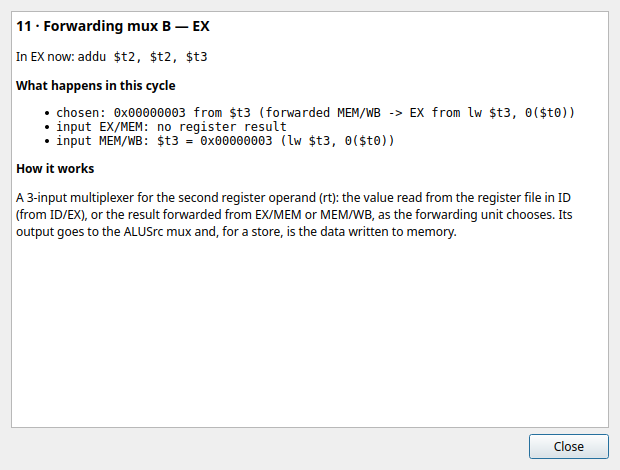
Control (5) and the ALU (13) open their logic as gates, drawn above the text:
- Control — the main control unit as PLAs, as Patterson & Hennessy draw it: the opcode decoder (op5..op0 — each input as a true and an inverted column, each product term a row ANDing the inputs with a dot, the OR plane ORing terms into the control signals) and, for an opcode whose instructions differ (SPECIAL, REGIMM, SPECIAL2 / 3, COP0 / 1 …), the secondary decoder its escape line enables, on the field that tells them apart (funct, rt, rs; Release 6's compact branches by comparators: rs = 0, rt = 0, rs = rt, rs < rt). Lit lines carry a 1 — the opcode's bits, the product term that matches, the signals it makes.
- ALU — the ALU control PLA (ALUOp from the main control + funct → Ainvert, Bnegate, Operation, Unsigned and the shifter's lines) and one ALU bit slice in gate symbols: the Ainvert / Bnegate muxes, the AND, OR and XOR gates, the full adder with its carries, the result mux (0 AND, 1 OR, 2 sum, 3 Less, 4 XOR, 5 the shifter) and, on bit 31, the Overflow and Set logic. Pick the bit with ALU bit slice. Under them, every row of 32 bits (a, b, a', b', AND, OR, XOR, the carries, SUM, Less, the result — the one the mux passes highlighted), Zero, Overflow and Set, and the barrel shifter's five stages for a shift.
The logic covers every MIPS32 instruction of the release: real MIPS decoders are not published, so eMIPS generates these PLAs from its own decode (minimized; a test checks them against every instruction) — with a 4-bit ALUOp, since the textbook's 2 bits name only add, subtract and "look at funct". The gate values are worked out from the operands the trace recorded and always give the result it recorded. (With the 24K model, RF shows the main control and EX the ALU.)
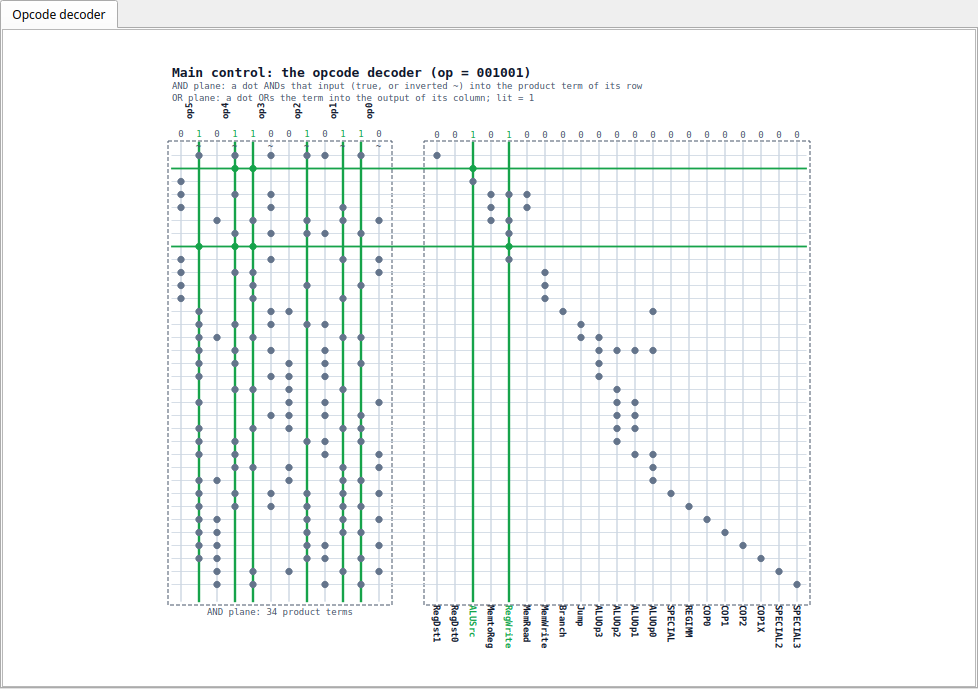
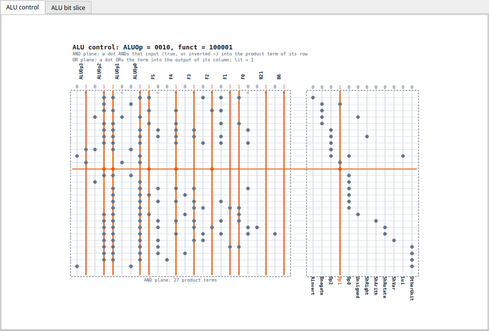
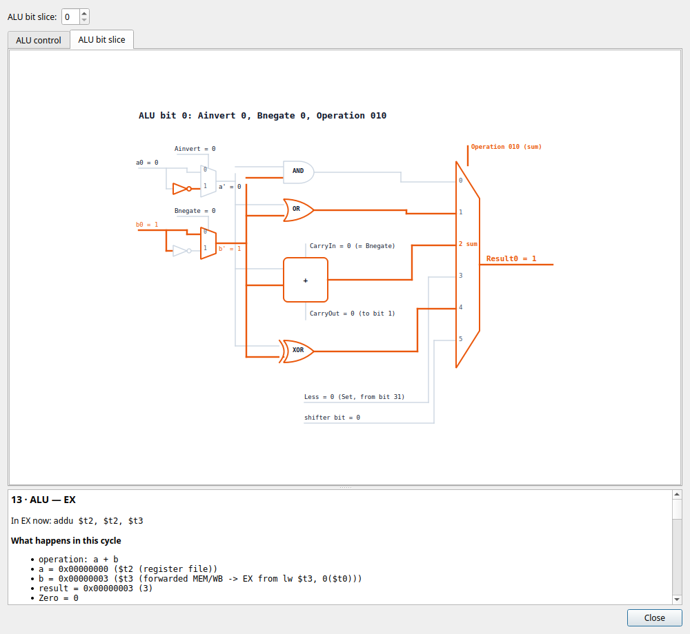
At cycle 9 of the sum example, addu $t2, $t2, $t3 in EX gets $t3
forwarded from MEM/WB — the lw in WB has just loaded it:
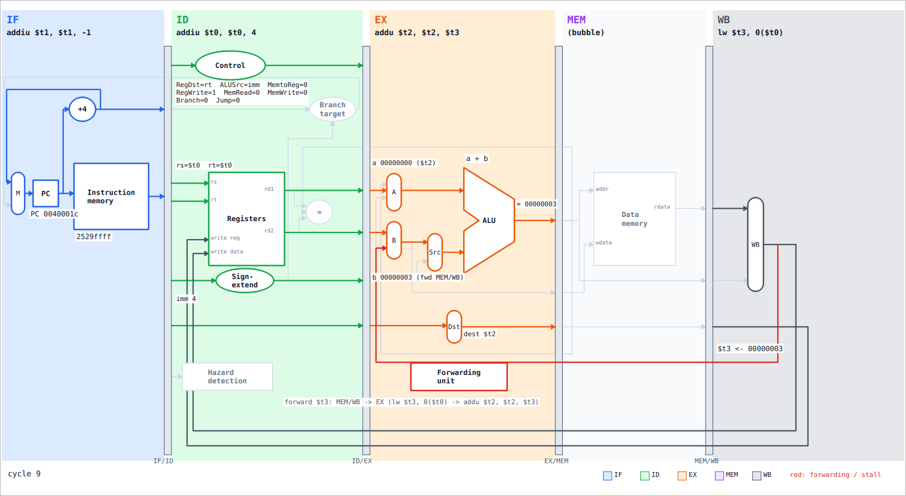
Two cycles later bnez (that is bne $t1, $zero, loop) is in ID and
needs $t1, which the addiu in EX is still computing: Hazard
detection stalls ID for a cycle (STALL — branch: branch needs $t1
from addiu $t1, $t1, -1 (in EX)):
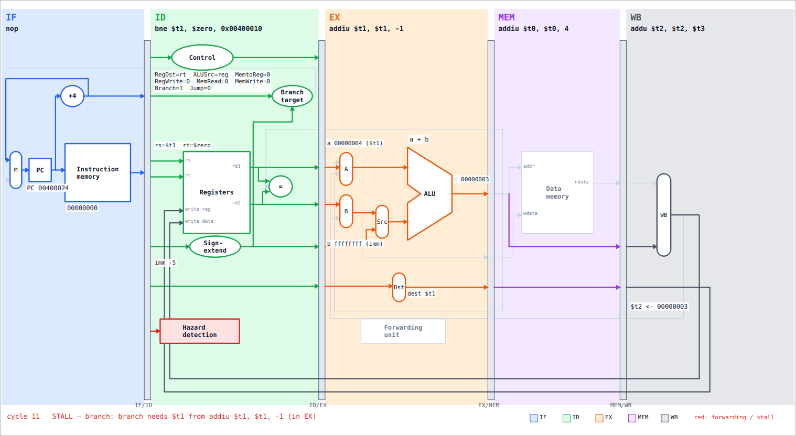
In instruction mode there is no overlap: the one instruction just executed is drawn in all five stages (executed: ... under the diagram).
With caches (Settings → Caches) the two memories become the
I-cache and the D-cache (named with their shape, 32K:4:32),
and the level below them — the L2, or memory — is drawn under each.
Under a cache: what the access did — I$ hit: set 0 way 3, or in red
D$ MISS (compulsory), the set and the way the line went to, and while
the line is coming waiting: 53 more cycle(s); under the L2: whether it
had the line. A miss lights the cache and the refill wire red:
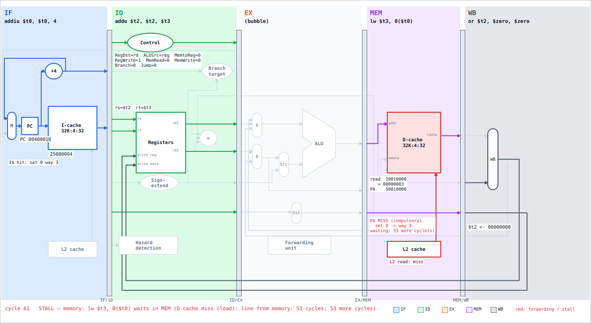
The lw in MEM missed (the first access to the array), the L2 missed
too, and the pipeline waits for memory: STALL — memory: lw $t3, 0($t0)
waits in MEM. The cost of a miss is explained in
Phase 5.
With a TLB (Settings → Processor → MMU) the first line under each
memory says what its micro-TLB did: ITLB hit, or in red DTLB MISS:
TLB entry 13 (the main TLB had the translation: 3 cycles in the
pipeline) and TLB Refill under it when no entry had it. The
TLB pane shows the entries.
The model's details — what stalls how long, why branches are decided in ID, how multiply and divide occupy the pipeline — are in Phase 5.
The MIPS 24K
With the 24K pipeline model (Settings → Processor → Pipeline model) the pane draws the 24K's nine stages instead:
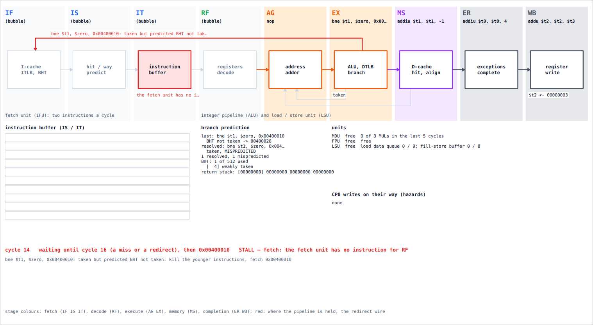
- The top row: IF, IS, IT (the fetch unit, two instructions a cycle),
RF, AG, EX, MS, ER, WB, each with its instruction, filled in the colour
of the textbook stage doing the same work. Red is the stage where the
pipeline is held, with the reason (the fetch unit had nothing, a
missing load, a busy divider ...). The redirect wire from EX back
to IF lights up when the fetch restarts: a misprediction (here the
bnewas predicted not taken), an exception,eret. - Below: the instruction buffer (what the fetch unit has fetched ahead), branch prediction (the last prediction and resolution, the branch history table entries used, the return stack), the units (the multiply / divide unit, the FPU, the load / store unit with its load data queue and fill-store buffer) and the CP0 writes on their way — the hazards an instruction would still see.
- At the bottom: the cycle, what the fetch unit is doing, the stall and the cycle's events.
- Click a stage or one of the four boxes below for what it does inside and in this cycle (the same window as above); with View → Datapath Part Numbers they are numbered 1-9 (IF … WB), 10 the instruction buffer, 11 branch prediction, 12 the units, 13 the CP0 hazards.
The model is explained in Phase 5.
3.5 The Pipeline chart
One row per instruction, one column per clock cycle; each cell is the
stage the instruction was in. -- (red) is a cycle stalled in ID;
IF IF is a fetch repeated because of a stall; EX EX EX is an
instruction holding EX (a multiplication). The last 24 cycles are shown.
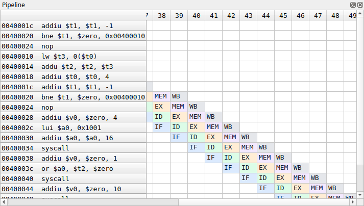
The chart exists in pipeline mode only. The status bar shows the CPI.
With the 24K model the stages are IF IS IT RF AG EX MS ER WB, every
instruction in the fetch unit has its row, and xx (red) marks an
instruction killed (fetched on a wrong path, or behind an exception).
3.6 Disassembly and Instruction
Disassembly lists the machine code of the program: address, word,
instruction, source line. It shows what pseudo-instructions became, and
the nops the assembler put in delay slots. The current instruction
(or, in pipeline mode, each stage's) is coloured; breakpoints are red.
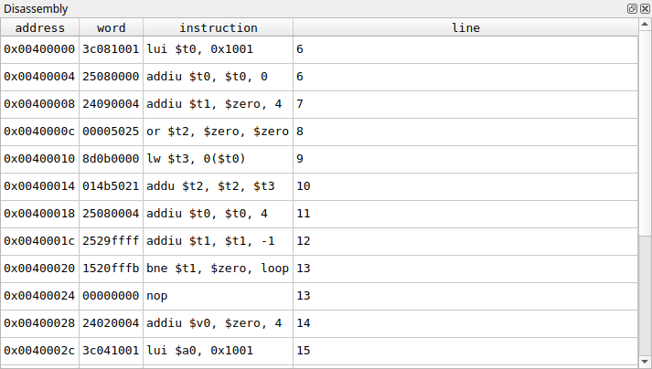
Instruction takes the last executed instruction apart: its address and text, its format (R, I, J ...) and word, a bit-field table (name, bits, value and meaning of each field), then what the ALU did (the operation, each operand and where it came from, the result), the address it accessed (base + offset, segment, privilege, alignment, and the physical address the MMU made of it, with the rule and the cacheability attribute), the branch decision, and its effects (memory read / written, registers changed). An exception is shown in red. See the picture in Phase 1.
The Source pane (C programs)
An ELF executable built from C (Phase 2, 2.18) opens as a read-only listing — the disassembly, with each C line above its instructions — and the Source pane shows the C file itself, at the line the program is on (it follows the program from file to file). Click its gutter to set a breakpoint on a C line. Below, the call stack: the calls not returned yet, innermost first (click one to see its line). Step Line (F11) runs to the next C line, into calls; Next Line (Ctrl+F11) over calls; Finish (Shift+F11) until the function returns. For an assembly program the editor is the source: the pane shows the call stack, and Step Line steps a source line (a pseudo-instruction's several instructions at once).
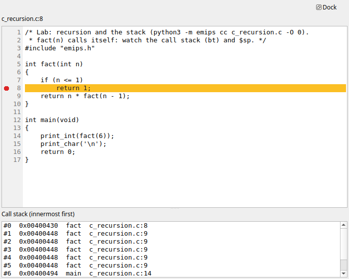
3.7 Registers
Five tabs:
- GPRs — the 32 registers in hex and decimal; those changed by the last step are highlighted.
- PC / CP0 —
pc,hi,lo, and the coprocessor-0 registers Status, Cause, EPC, BadVAddr, Count, Compare, IntCtl, SRSCtl, SRSMap, the MMU's registers, the performance counters PerfCtl0/1 and PerfCnt0/1 (Phase 5), and the FPU's FCSR. - FPU —
$f0–$f31(64 bits in hex), read as a single and as a double. - Interrupts — the interrupt mode (compatibility, vectored, EIC),
the vector spacing, what is pending and enabled (or, in EIC mode, the
RIPL the controller requests, Status.IPL and the RIPL / shadow set
taken last), the vector the next interrupt goes to; and with more than
one GPR set (Settings → Processor → GPR shadow sets) the sets: pick
one (the current and the previous are marked) to see its 32
registers, with SRSMap's vector → set mapping
(Phase 5).
The debugger's
srsprints the same. - Debug — EJTAG: Debug Mode or not, what entered it (SDBBP, single
step, a debug interrupt, an exception in Debug Mode), the Debug
register's single step / LSNM / CountDM / IEXI, DEPC, DESAVE, the DCR
and the debug vector, the hardware breakpoints and watch registers set
(the debugger's
ejtag ib / db / watchsets them), the TAP and the probe; the boxes EJTAG probe connected and Debug handler from the probe connect a probe (ProbEn / ProbTrap; the program restarts — Phase 5); the Debug Interrupt (DINT) button requests a debug interrupt as a probe does (Phase 5). The debugger'sejtagprints the same. In Debug Mode the PC / CP0 tab adds Debug, DEPC and DESAVE, and the status bar says Debug Mode.
View → Register Names switches between $t0 and $8 everywhere.
| PC / CP0 | FPU | Interrupts | Debug |
|---|---|---|---|
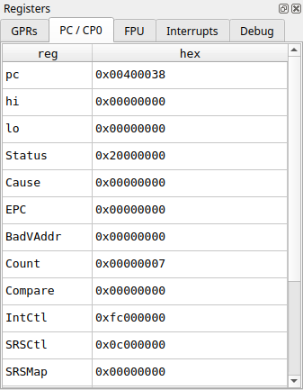 |
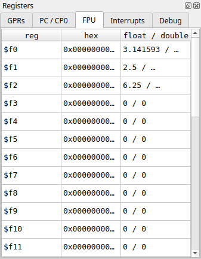 |
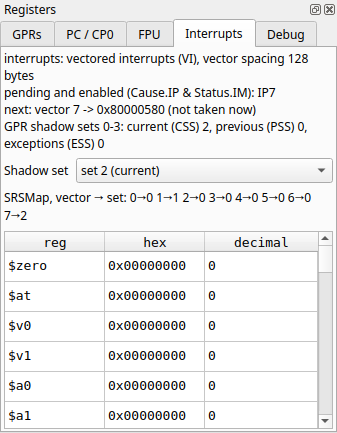 |
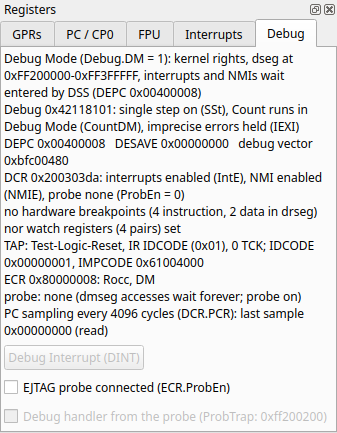 |
3.8 Memory
A hex dump: each row is an address and four 32-bit words, then the same 16 bytes as text.
- Choose a region: .data (
0x10010000), .text (0x00400000), stack (from just below$sp), MMIO (the four console device registers at0xffff0000); - or type an address (e.g.
0x10010010) and press Enter; clear the box to go back to the region; - tick physical to see the RAM by physical address — the region
jumps to where the MMU puts it (
.data→0x50010000), and a typed address is then physical (Phase 5, 5.8).
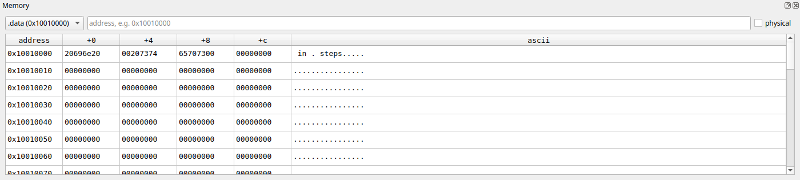
Words are shown as the processor reads them in the current byte order.
Caches
The Caches pane (a tab of the bottom area) shows one cache at a time — pick it in the box: I-cache, D-cache, L2, L3, whichever the machine has (Settings → Caches).
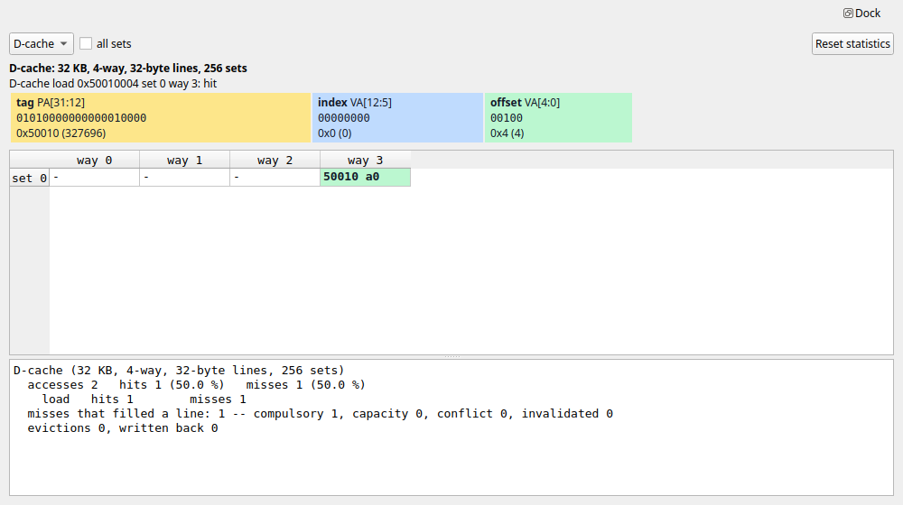
- At the top: the cache's shape and the last access to it, with its address cut into tag | index | offset (the bits, the value, and whether they come from the virtual or the physical address).
- The table: one row per set, one column per way. A cell is the line's
tag in hex, its age
a0… (a0= used most recently, the oldest is replaced next),Ddirty,Llocked;-is an invalid line. The line of the last access is green for a hit, red for a miss (the line just filled). Hover a cell for its address and its data. - It lists the sets holding lines (and the one last used); all sets lists every set (caches up to 1024 sets).
- At the bottom: the statistics — accesses, hits and misses per kind of access (load, store, fetch, pref; read and write for the L2), the misses by their cause (compulsory, capacity, conflict, invalidated), evictions and write-backs, and with the D-cache the write buffer's counters. Reset statistics starts them again (the contents stay).
Looking never changes the cache: no hit is counted and no LRU bit moves because the pane shows them. The 3 C's are explained in Phase 5.
TLB
The TLB pane (a tab of the bottom area) shows the MMU's entries when the machine has a TLB or a BAT (Settings → Processor → MMU; the two TLB examples switch to one by themselves).
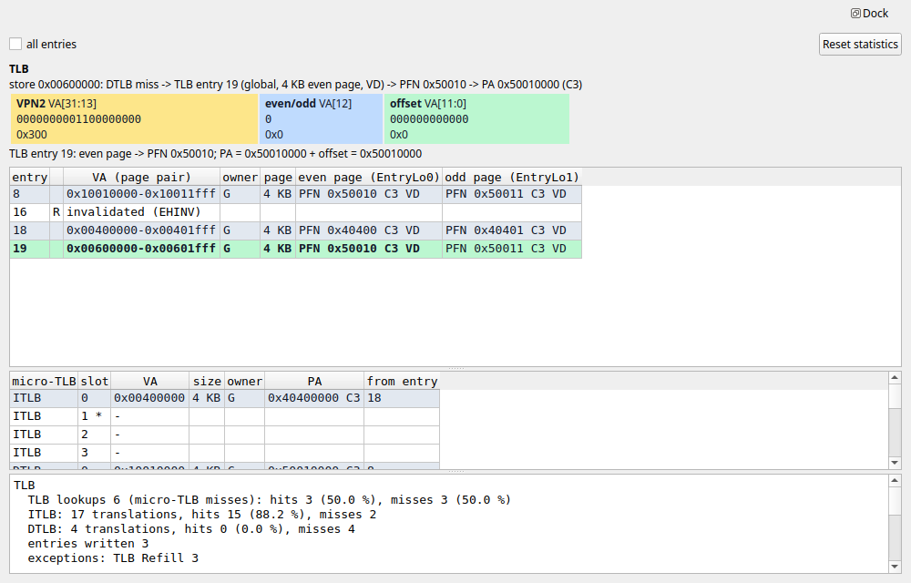
- At the top: the last translation — the access, the micro-TLB hit
or miss, the entry, PFN and physical address (or the TLB exception) —
with its virtual address cut into VPN2 | even/odd | offset, and
what
tlbwr,tlbwi,tlbp,tlbrortlbinvdid in that step. - The entries: VA range of the page pair, owner (
Gglobal or the ASID), page size, and the even / odd page (PFN, cacheability C, flags V D RI XI).Wmarks the wired entries,Rthe one Random points at (tlbwrwrites it next). The entry of the last translation is green when it translated, red when it raised an exception; its half used is in bold. It lists the entries in use (and the wired ones and Random's); all entries lists every one, also those never written or invalidated. Hover an entry number for the details. With an FTLB,V5is VTLB entry 5 andF9.3FTLB set 9, way 3. - Below: the ITLB and DTLB slots, the copies of recent
translations (
*= replaced at the next miss), and the statistics (TLB lookups, hits, misses, exceptions, page walks) with the registers a refill handler uses. Reset statistics starts the counters again.
With the BAT MMU the table shows its six base-and-bounds entries. As with the caches, looking changes nothing: no micro-TLB is refilled and nothing is counted because the pane shows it (Phase 5, Watching the TLB).
Counters
The Counters pane (a tab of the bottom area) sets and shows the two performance counters (CP0 register 25).
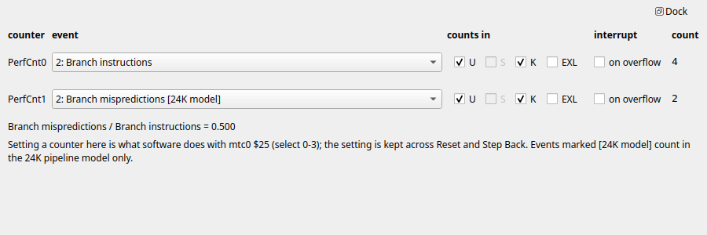
For each counter: the event it counts (the MIPS 24K's lists; events
marked 24K model count in that pipeline model only), the modes it
counts in (U user, S supervisor — with a TLB —, K kernel,
EXL exception handlers; a new event starts with U and K), whether
its overflow raises the counter interrupt, and the count. Below:
the ratio of the two counters (the CPI when they count cycles and
instructions). Setting a counter here does what a program does with
mtc0 $25, and is kept across Reset and Step Back; a program that sets
the counters itself wins
(Phase 5).
Trace
The Trace pane (a tab of the bottom area) is a trace probe on the selected core's TCB.
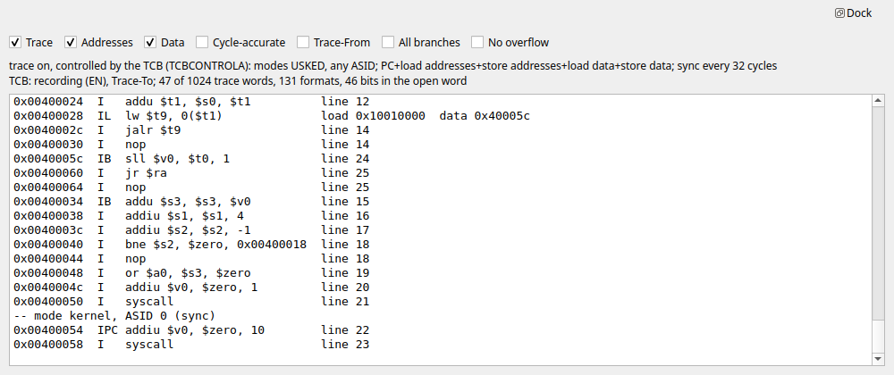
Trace turns MIPS Trace on (into the on-chip trace memory), Addresses / Data add the load and store addresses and data, Cycle-accurate the stall cycles, Trace-From stops when the memory is full (else it keeps the newest), All branches sends the PC of every branch, No overflow stalls the core rather than lose trace. Below: the state of the TCB and the program flow regenerated from the trace words (the last 200 instructions; only while the pane is shown). The settings are TAP scans, kept across Reset and Step Back (Phase 5).
More than one core: the System pane
With Settings → Processor → Cores above 1, the toolbar's core selector (with each core's power state) chooses the core every pane shows — registers, datapath, pipeline chart, caches, TLB, counters, memory as that core sees it. In the editor's gutter C1, C2 … mark the lines where the other cores are (their next instruction; the highlighted line is the selected core's):
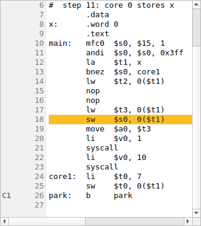
The System pane (a tab of the bottom area) shows the whole system (Phase 5, 5.9):
- Cores — each core's power state (the CPC's SEQSTATE, or waiting / exited), PC and source line, mode and the interrupt pins asserted; click a core to select it.
- Coherence — every core's
GCR_CL_COHERENCE(coherent mode, whose interventions it hears), what the Coherence Manager did, and the line the selected core's last data access used: its MESI state in every core's data cache (Modified / Exclusive / Shared highlighted). - GIC — the enabled interrupt sources (trigger, pending, which pin — or, for a core in EIC mode, which vector — of which cores); every core's local interrupts (the GIC's count / compare, and the core's own timer, performance counters and software interrupts, which the GIC routes: pending, enabled, where they go); every core's pins (EIC mode: the RIPL it is sent, with its shadow set) and COMPARE (The GIC as an External Interrupt Controller).
- Registers — the GCRs (global and each core's block), the CPC and the GIC, as the cores read them.
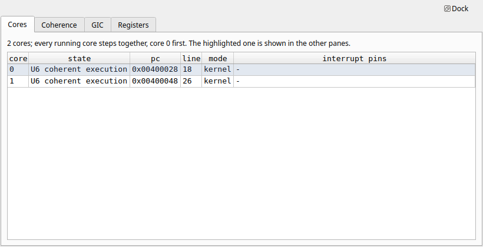
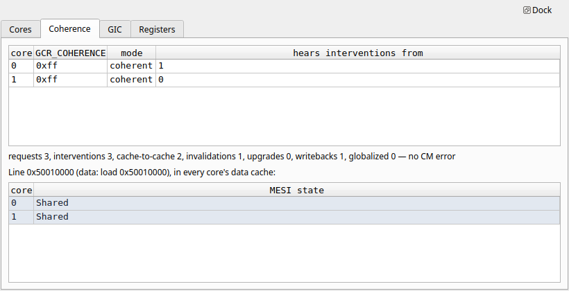
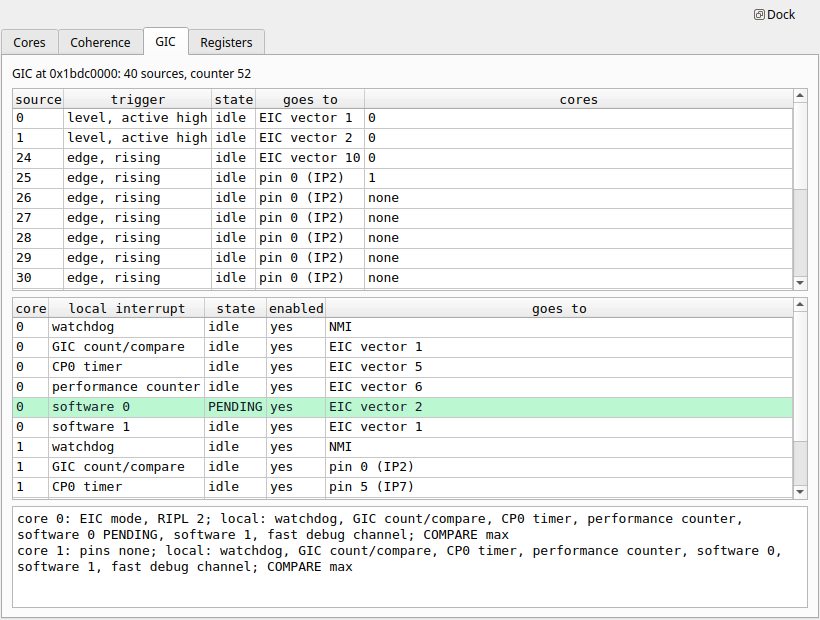
3.9 Console and Messages
The Console shows what the program prints (system calls and the MMIO display), and has two input fields:
- read_int / read_string ... — when the program waits for input this field turns amber; type the value, press Enter, then Step or Run.
- MMIO keyboard — the keys you type here (Enter sends them, and the Enter key itself) go to the memory-mapped keyboard, one at a time.
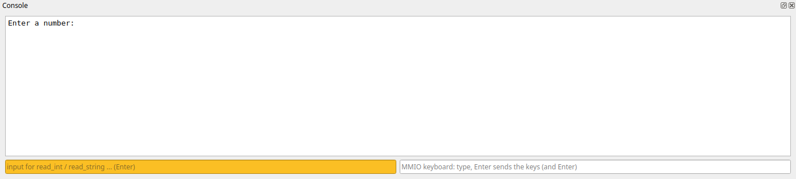
Messages logs what happened: assemblies, loaded files, errors with their line number, breakpoints set or cleared, the input you gave.
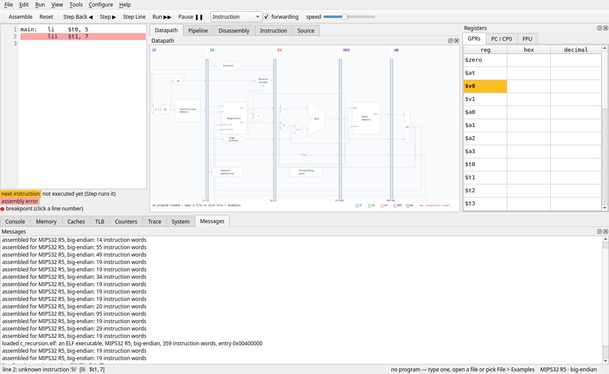
3.10 Tools
The Tools menu opens three panes (hidden until you use them; they follow the release, register names and strict mode in use):
Instruction Reference (Ctrl+Shift+I) — every instruction of the selected release. Search by mnemonic, description or family ("branch", "float", "load word"); select one to see its syntax, its encoding with the fields named, the release that introduced (and removed) it, whether it has a delay slot or needs kernel mode, and how eMIPS simulates it. Double-click, or Insert into editor, puts its syntax at the cursor.
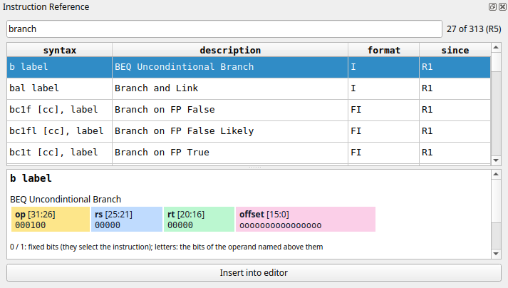
Encoder / Decoder (Ctrl+Shift+E) — type a 32-bit word (0x8fa80004,
binary or decimal) to see its fields and instruction, or an instruction
(sw $ra, 4($sp)) to see its machine word(s). A pseudo-instruction
shows every word it becomes; At address sets the PC for branch and
jump targets.
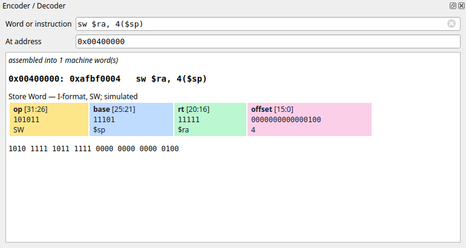
Number Converter (Ctrl+Shift+N) — type a number in any form (42,
-7, 0x2a, 0b101, 'A', 1.5, inf, nan) to see it in hex,
unsigned, signed, binary, octal, as text, and as an IEEE-754 single and
double with its sign / exponent / fraction fields, the formula, and the
rounding error when the value cannot be stored exactly.
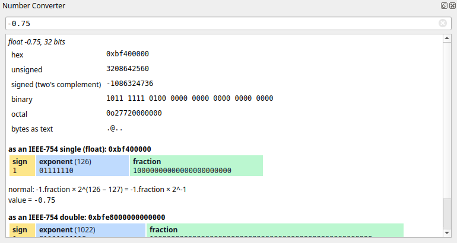
The user guide
Help → User Guide (F1) opens this guide in a window of its own.
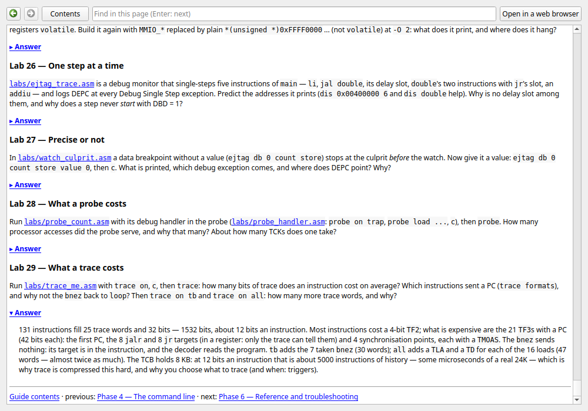
Back / forward (Alt+←, Alt+→), Contents, and a find field (Ctrl+F, Enter
for the next match) work as in a web browser. Above every complete program of the
guide, Open in the editor puts it in the editor and assembles it (a
program for another release switches to it); a link to a lab program
(labs/….asm, .c, .elf) opens that file. The answers of
the labs stay folded until you click ▸ Answer. Open in a web
browser shows the same page in your browser — the guide is a set of HTML pages
in docs/guide/ (start at index.html), readable without eMIPS too.
3.11 Settings
Configure → Settings… (Ctrl+,) has seven tabs. OK or Apply stores the values (they are remembered); Restore Defaults resets every tab. A change that affects how the program is assembled re-assembles it; any other change restarts it.
Processor
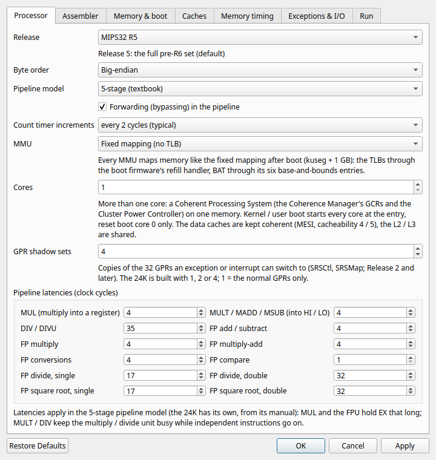
| Option | Meaning |
|---|---|
| Release | MIPS32 R1, R2, R3, R5 (default) or R6 (Phase 2, 2.14) |
| Byte order | big-endian (default) or little-endian |
| Pipeline model | the textbook 5-stage pipeline (default) or the MIPS 24K's 8 stages with branch prediction (Phase 5); the Datapath pane, the chart and the other panes follow both |
| Forwarding | the pipeline's bypass paths (same as the toolbar box); the 5-stage model only — the 24K always has its bypasses |
| Count timer increments | every cycle, or every 2 cycles (default, like most MIPS cores) |
| Cores | 1 (default) to 4: more than one is a multi-core system (one memory, the Coherence Manager, the Cluster Power Controller, Phase 5, 5.9); the toolbar then has a core selector — the core the panes show, with its power state; every running core steps together. The data caches are kept coherent: the Caches pane shows each line's MESI state (M / E / S), the last access what the Coherence Manager did (Coherent caches) |
| GPR shadow sets | 1 to 16 (default 4, the most a 24K has): copies of the GPRs an exception or interrupt switches to (SRSCtl, SRSMap; Release 2+) — Phase 5 |
| MMU | the fixed mapping (default), BAT, the TLB of a MIPS 24K with 16, 32 or 64 entries, or the VTLB + FTLB of a P5600, also with segmentation control, EVA and the page table walker (Phase 5, The TLB); the CP0 tab then lists the MMU's registers |
| Pipeline latencies | how many cycles MUL, MULT / MADD, DIV and the FPU operations take in the 5-stage pipeline (the 24K model has the latencies of its manual) |
Assembler
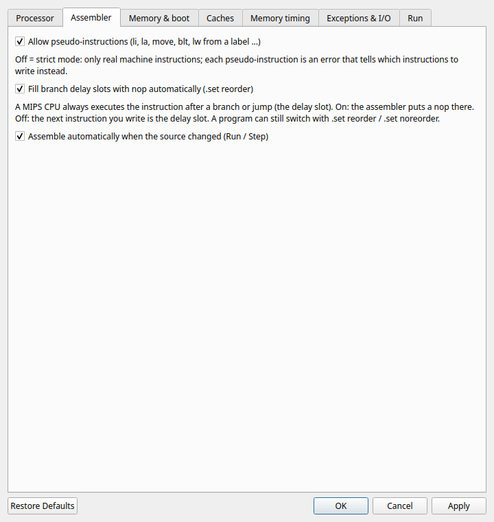
| Option | Default | Meaning |
|---|---|---|
| Allow pseudo-instructions | on | off = strict mode: only real machine instructions |
| Fill branch delay slots with nop | on | the initial .set reorder / .set noreorder |
| Assemble automatically when the source changed | on | Step / Run assemble first |
Memory & boot — the state the program starts in:
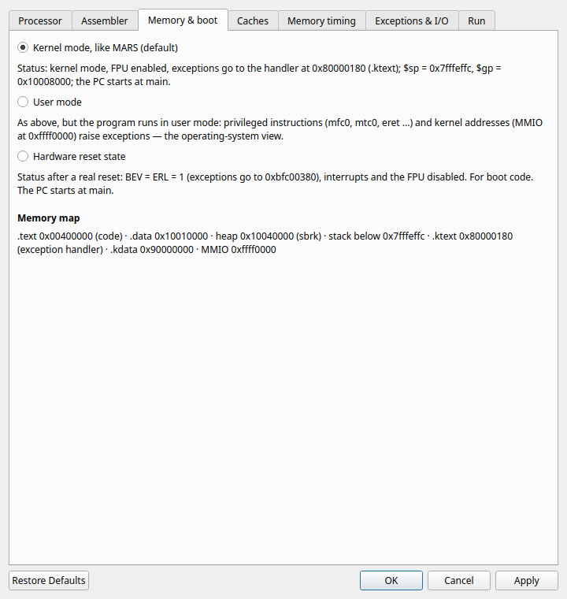
| Option | Meaning |
|---|---|
| Kernel mode, like MARS (default) | kernel mode, FPU on, exceptions to the handler at 0x80000180, $sp and $gp set |
| User mode | the same, but in user mode: privileged instructions and kernel addresses raise exceptions |
| Hardware reset state | as after a real reset: exceptions to 0xbfc00380, FPU and interrupts off, Status.ERL = 1 (kuseg not mapped) |
Caches — the caches and the write buffer (Phase 5, 5.8):
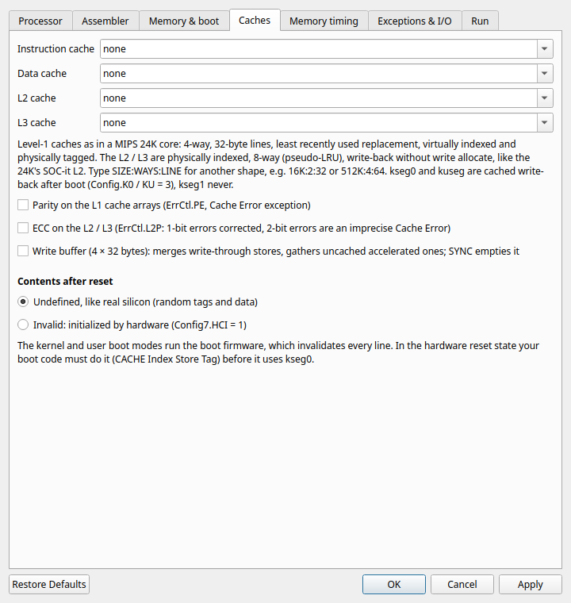
| Option | Meaning |
|---|---|
| Instruction cache, Data cache | none (default), 8K, 16K, 32K or 64K (4-way, 32-byte lines, as a MIPS 24K), or type SIZE:WAYS:LINE (16K:2:32) |
| L2 cache, L3 cache | none (default), 128K–1M (L2) / 1M, 2M or 4M:8:64 (L3), 8-way, 32-byte lines unless given, or SIZE:WAYS:LINE (at most 8192 sets per way); an L3 needs an L2 |
| Parity on the L1 cache arrays | ErrCtl.PE can be set, and a corrupted line raises the Cache Error exception |
| ECC on the L2 / L3 | ErrCtl.L2P can be set: 1-bit errors are corrected, 2-bit errors raise an imprecise Cache Error |
| Write buffer | 4 × 32 bytes between the core and memory: write-through stores merge, uncached accelerated ones are gathered, sync empties it |
| Contents after reset | random, as on real chips (default), or invalid (Config7.HCI = 1); the kernel and user boot modes invalidate the caches anyway |
Memory timing — what a cache miss or a write costs in the 5-stage pipeline mode (Phase 5, 5.8); without caches memory takes one cycle:
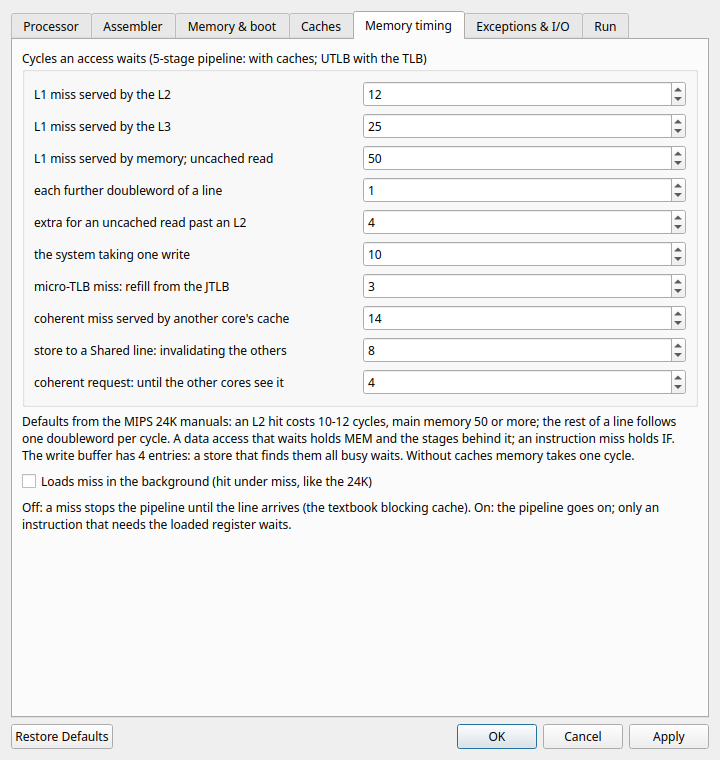
| Option | Meaning |
|---|---|
| L1 miss served by the L2 / L3 / memory | cycles until the first doubleword of the line arrives (12 / 25 / 50; memory also for uncached reads) |
| each further doubleword of a line | 1 cycle per doubleword on the 64-bit bus |
| extra for an uncached read past an L2 | 4 cycles |
| the system taking one write | 10 cycles per write-buffer entry, or per store without a write buffer |
| micro-TLB miss | 3 cycles to refill the ITLB / DTLB from the main TLB (with the TLB MMU, also without caches) |
| coherent miss served by another core's cache | 14 cycles to the first doubleword of a line sent cache to cache (more than one core, Coherent caches) |
| store to a Shared line | 8 cycles for the upgrade that invalidates the other copies |
| coherent request: until the other cores see it | 4 cycles before a store waiting in the fill-store buffer is visible to the other cores (Memory ordering) |
| Loads miss in the background | off: a miss stops the pipeline (blocking); on: only an instruction that needs the loaded register waits (the 24K's hit under miss) |
Exceptions & I/O
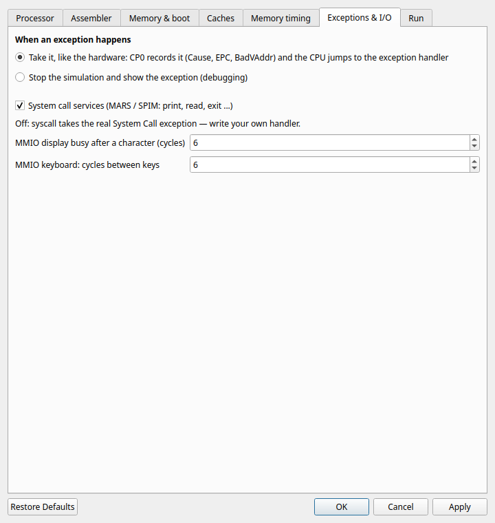
| Option | Meaning |
|---|---|
| Take it, like the hardware (default) | CP0 records the exception and the CPU jumps to the handler |
| Stop the simulation | stop at the faulting instruction and show the exception — for debugging |
| System call services | on: the MARS / SPIM services; off: syscall raises the System Call exception |
| MMIO delays | cycles the display stays busy after a character, cycles between keys |
Run
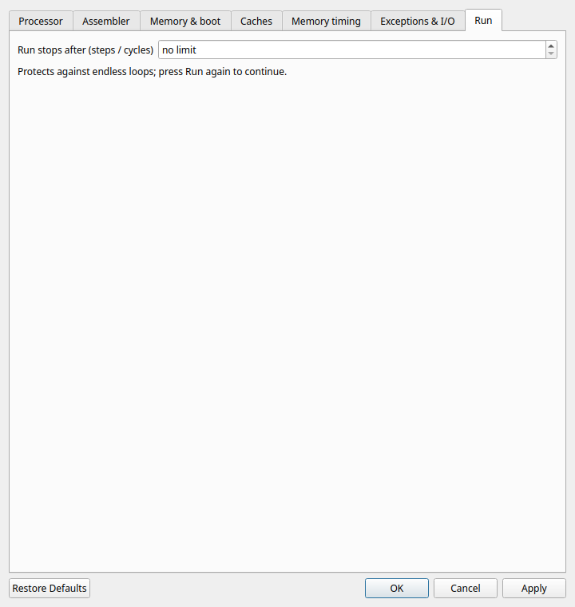
| Option | Meaning |
|---|---|
| Run stops after | a step limit for Run (protects against endless loops; Run again continues); no limit by default |
3.12 Theme and language
Configure → Theme: System (follows your desktop, also when it switches between light and dark while eMIPS runs), Light or Dark. Everything follows the theme, the datapath and the coloured cells included.
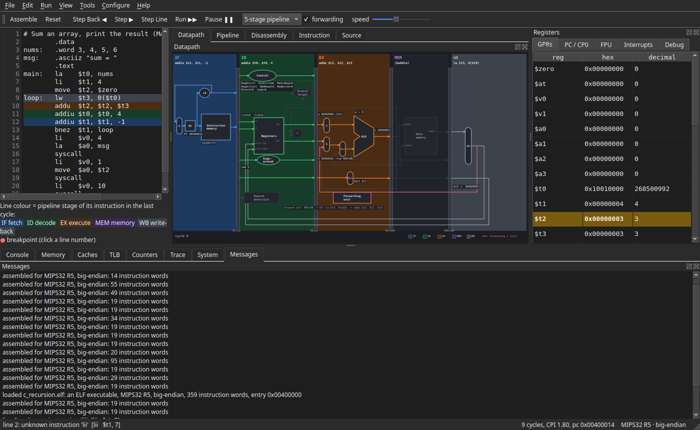
Configure → Language: English, plus any translation installed; the
change applies the next time eMIPS starts. Translations are files in
emips/gui/translations/ (Qt Linguist .ts); to start one, run
python3 tools/extract_gui_strings.py ro (for Romanian) and fill in the
translations with Qt Linguist or a text editor.
3.13 The menus, item by item
File
| Item | Key | |
|---|---|---|
| New | Ctrl+N | an empty editor (asks to save changes) |
| Open… | Ctrl+O | an assembly source (.asm, .s) or an Intel HEX file (.hex) |
| Open Intel HEX… | a file as Intel HEX, whatever its name | |
| Open Recent | the last eight files | |
| Examples | the nine example programs (an R6 example switches the release to R6) | |
| Save / Save As… | Ctrl+S | save the source |
| Export → Intel HEX… / Listing… | the machine code as Intel HEX; a listing (address, word, instruction, source) | |
| Quit | leave (asks to save changes) |
Edit — Undo / Redo (Ctrl+Z / Ctrl+Y), Cut / Copy / Paste / Select All, Find… / Replace… / Find Next / Find Previous / Go to Line…, Toggle Comment / Indent / Unindent, Toggle Breakpoint (F9), Clear All Breakpoints. Undo, Copy and Paste act on the field that has the keyboard focus (the editor, a console field ...).
Run — Assemble, Run, Pause, Step, Step Back, Run to Cursor, Reset; Debug Interrupt (DINT: EJTAG Debug Mode, Phase 5); Mode (Instruction / 5-stage pipeline); Forwarding.
View — show or hide each pane (Datapath, Pipeline, Disassembly,
Instruction, Registers, Console, Memory, Caches, TLB, Counters, Trace,
System, Messages); Register Names (ABI $t0 / numbers
$8); Zoom In / Out / Reset; Datapath Part Numbers; Reset Layout.
Tools — Instruction Reference, Encoder / Decoder, Number Converter.
Configure — Settings…; MIPS32 Release; Byte Order; Theme; Language.
Help — User Guide (F1: this guide in a window of its own — see The user guide), Quick Start, Keyboard Shortcuts (the complete list, as your system shows them), System Calls, Registers, About eMIPS, About Qt.